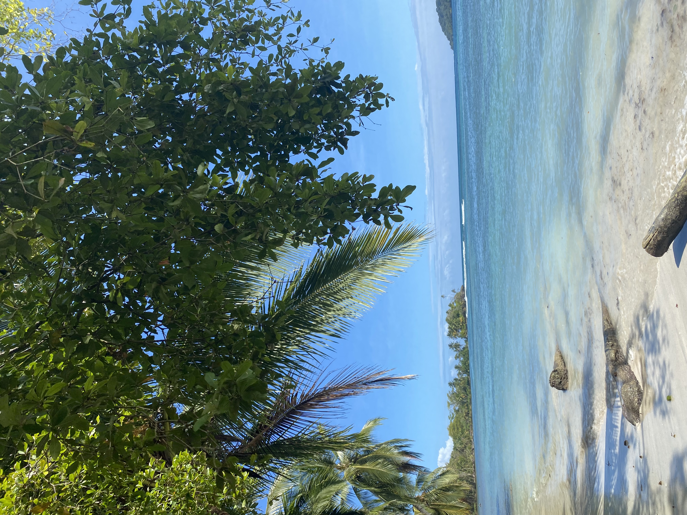

¿Por qué elegir OS?
Destinamos un % de tu compra a acciones sociales.
Podes formar parte de estas acciones con nostros.
-
Si el producto no te gusta lo podes devolver o cambiar.
Si el producto no te gusta lo podes devolver o cambiar.